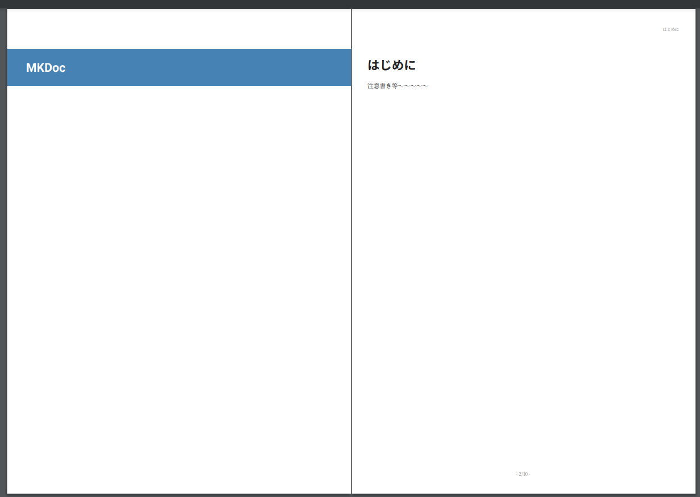

mkdocs-with-pdf
mkdocs-with-pdfを使用して、ドキュメントをPDFとして出力することができます。
環境構築
WeasyPrintに依存してるので、事前に環境構築が必要。
https://doc.courtbouillon.org/weasyprint/latest/first_steps.html#linux
インストールする。
プラグインを有効にする。
表紙をつける

表紙をカスタマイズする
表紙用のHTMLを差し込むことができます。
custom_template_pathで指定したディレクトリー内に、cover.htmlを配置します。

<!-- 表紙 -->
<div style="background-color: steelblue; padding: 0.5em;">
<h1 style="color: white;">MKDoc</h1>
</div>

デフォルトで余白が設定されているので、帯状に塗りつぶしたい場合、marginをマイナスに設定して描画領域を調整します。
<!-- 表紙 -->
<div style="background-color: steelblue; padding: 0.5em 0.5em 0.5em 3.5em; margin: 0 -3em;">
<h1 style="color: white;">MKDocs</h1>
</div>

表紙の次に注意書き等のページを差し込む
cover.html 内で改ページを指定することで、2ページ以降にも任意のページを差し込むことができます。
<!-- 表紙 -->
<div style="background-color: steelblue; padding: 0.5em 0.5em 0.5em 3.5em; margin: 0 -3em;">
<h1 style="color: white;">MKDocs</h1>
</div>
<!-- 注意書き -->
<div style="page-break-before: always;">
<h1>はじめに</h1>
<span>注意書き等～～～～～</span>
</div>

PDF出力用のスタイルシートを指定する
custom_template_pathで指定したディレクトリー内に、styles.scssを配置します。

見出しのボーダーカラーを変更する
テーマを指定するようなオプションはないので、styles.scss内でスタイルを指定します。
$mainColor: #177e7e;
$subColor: rgba($mainColor, 0.85);
article {
h1 {
border-bottom: 2px solid $mainColor !important;
}
h2 {
border-bottom: 1px solid $subColor !important;
}
h3 {
border-bottom: 0.5px solid #eee;
}
h1>.pdf-order,
h2>.pdf-order,
h3>.pdf-order {
padding-left: 6px;
}
}
.pdf-order {
color: $mainColor !important;
}

PDF出力用のHTMLを確認する
スタイルを拡張する際、要素の構造や、属性等確認したい場合があります。
オプションをdebug_html: trueとすることで、PDF出力用のHTMLがログ出力されるようになります。